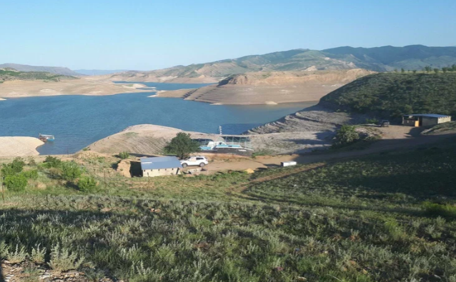

Сулакский каньон - одно из самых глубоких и живописных мест в России, уникальное природное чудо, привлекающее множество туристов и путешественников. Сулакский каньон — один из самых глубоких каньонов в мире и самый глубочайший в Европе, его глубина достигает до 1920 метров, а протяжённость 53 километра. Является одной из самых известных и посещаемых природных достопримечательностей Дагестана, ежегодно его посещают тысячи туристов со всего мира. Расположен Сулакский каньон в центральной части Дагестана, в долине реки Сулак. Рядом расположен посёлок городского типа Дубки.
Сулакский каньон — один из самых глубоких каньонов в мире и самый глубочайший в Европе, его глубина достигает до 1920 метров, а протяжённость 53 километра. Является одной из самых известных и посещаемых природных достопримечательностей Дагестана, ежегодно его посещают тысячи туристов со всего мира. Расположен Сулакский каньон в центральной части Дагестана, в долине реки Сулак. Рядом расположен посёлок городского типа Дубки.
Одна из самых высоких смотровых площадок каньона находится у КФХ Родник. Её высота — 966 метров над уровнем моря. Координаты — 43.029659, 46.781007. Прекрасный вид на каньон, рядом кафе и гостевые дома, есть заборы и ограждения — место обустроено для туристов. Отдыхающих здесь не так много, как в Дубках, потому больше шансов отдохнуть в тишине, любуясь на горы. Людям, которые боятся высоты, на край ущелья за фотографиями лучше не лезть — риск сорваться и упасть довольно высок. Лучше понаблюдать за горным выступом издалека либо доехать до площадок с ограждениями.
В районе Сулакского каньона немало интересных достопримечательностей, которые стоит посетить, особенно если путешествуете на машине. Общественный транспорт курсирует здесь нечасто, да и не до всех локаций можно добраться на автобусе или электричке.
Дагестанское лето — жаркое, средняя температура +25…+30 градусов. В это время года будет утомительно долго гулять у каньона. Зато можно отправиться в сплав по реке Сулак — как раз вода прогреется до комфортной температуры. Зимы в Дагестане не холодные и довольно короткие. Средняя температура воздуха в это время года — около нуля. Для прогулок по смотровым площадкам подойдёт, но вот спуститься вниз к реке вряд ли получится. Самое лучшее время для посещения каньона — апрель-май и сентябрь. В это время года каньон украшают яркие цвета: ярко-зелёный — весной, золотой и красный — осенью. Погода как раз комфортная для прогулок. Эти месяцы подходят для тех, кто не переносит удушающую летнюю жару, но хочет насладиться речной прогулкой.